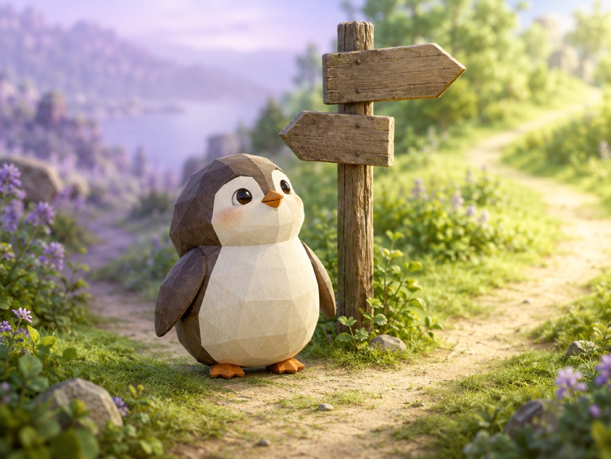

📝 DRAFT · 下書き — まだ本番に出していません · 下書き一覧
🐧 EVERYDAY LIFE⚡ 20 SEC
Your personality can change, because the thoughts you use become wide roads 🛣️

Born This Way?
We often think personality comes from birth, but it is said genes are about 40% of it.
The Other 60%
This means you can change the rest from now.
Brain Roads
It seems the ways of thinking you use often become wider roads in your brain.
⚡ TRY IT
Build a new road in your brain
Something happens. Pick a thought. The road you use gets wider.
😤 Grumpy road🌱 Tiny trail👣 Path🛣️ Road🚀 Highway
🌸 Kind road🌱 Tiny trail👣 Path🛣️ Road🚀 Highway
🤖 Autopilot: your brain takes the 😤 road.🤖 Autopilot: your brain takes the 🌸 road now!
It starts to rain on your day off. ☔
The train is 5 minutes late. 🚃
You drop your ice cream. 🍦
Your favorite cafe is full. ☕
Your hair is sticking up this morning. 🌀
You wake up late on Sunday. ⏰
🌸 Kind thoughts: 0
🎉 Habit switch! The kind road is the wide one now.
Any Age
Your personality can change at any age.
Play The Hero
For example, it seems good to act like your favorite anime hero.
📚 I learned this from the Japanese blog "Panda no Ondo".